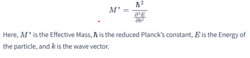

What is packing fraction? Packing fraction is the ratio of the volume occupied by the atoms in a crystal structure to the total volume of the crystal.
State Bloch theorem. Bloch theorem states that the wavefunctions of electrons in a periodic potential can be written as the product of a plane wave and a function with the same periodicity as the lattice:
What is primitive cell? A primitive cell is the smallest unit cell of a crystal lattice that, when repeated in all directions, completely fills the space without overlapping.
What are intrinsic semiconductors? Intrinsic semiconductors are pure semiconductors without any significant dopant atoms, and their electrical properties are determined by the semiconductor material itself.
What are Brillouin zones? Brillouin zones are specific regions in the reciprocal space of a crystal lattice that define the allowed and forbidden energy levels for electrons.
Semiconductors have negative temperature coefficient of resistance. Explain its meaning. A negative temperature coefficient of resistance means that the resistance of a semiconductor decreases as its temperature increases.
Define Fermi level Fermi level is the energy level at which the probability of finding an electron is 50% at absolute zero temperature.
Define mobility. Mobility is the measure of how quickly electrons or holes can move through a semiconductor when an electric field is applied, typically denoted by
𝜇=𝑣𝑑/𝐸
Where 𝑣𝑑 is the drift velocity and E is the electric field.
Give diffraction condition for reciprocal lattice. The diffraction condition for a reciprocal lattice is given by the Bragg's law:
nλ = 2d sinΘ
10. What are indirect semiconductors? Indirect semiconductors are materials where the maximum of the valence band and the minimum of the conduction band occur at different points in the momentum space
Give characteristics of semiconductors which differentiates them from Insulators and Conductors. Semiconductors have a band gap smaller than insulators but larger than conductors. Their electrical conductivity increases with temperature, unlike insulators and conductors.
Define packing fraction. What is the packing fraction for BCC? Packing fraction is the ratio of the volume occupied by atoms in a crystal to the total volume of the crystal. For Body-Centered Cubic (BCC) structure, the packing fraction is approximately 0.68.
Why X-rays are used for study of crystal structure and not ultraviolet radiations? X-rays have wavelengths comparable to the interatomic distances in crystals, making them suitable for diffraction studies, unlike ultraviolet radiations which have much shorter wavelengths.
What do you understand by density of states? Density of states refers to the number of electronic states per unit energy interval at each energy level that are available to be occupied by electrons.
Why N-type and P-type semiconductors are electrically neutral? N-type and P-type semiconductors are electrically neutral because the total number of positive and negative charges within the material remains balanced.
Discuss Diamond structure briefly. Diamond structure consists of a tetrahedral arrangement where each carbon atom is covalently bonded to four other carbon atoms, forming a strong and rigid three-dimensional network.
Find Miller indices of a plane that intercepts (a/2, a, 2a) in a simple cubic unit cell. The Miller indices for a plane intercepting (a/2, a, 2a) are (2, 1, 0.5), which simplifies to (4, 2, 1) after multiplying by 2 to clear the fraction.
Explain the Wiedemann Franz law The Wiedemann Franz law states that the ratio of the thermal conductivity to the electrical conductivity of a metal is proportional to its temperature
Define effective mass of an electron. Effective mass of an electron is a measure of how the electron responds to external forces in a crystal, expressed 